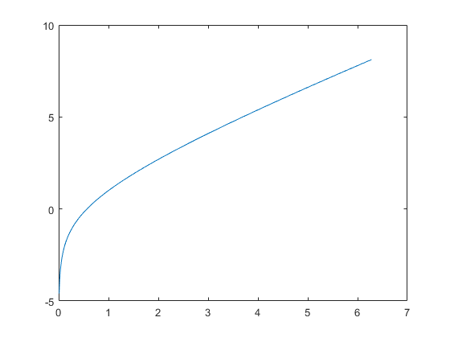
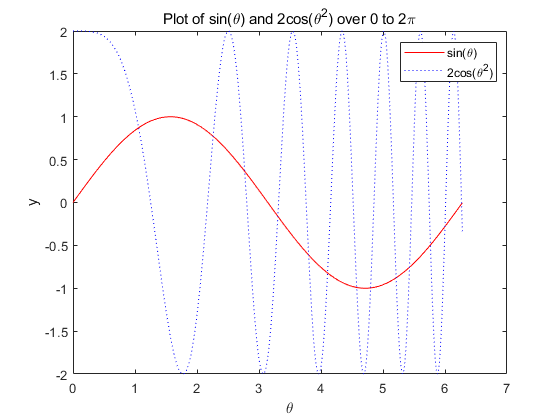

Title of document
This script shows how to add comments to make it so that you can publish your MATLAB script. Comments put here show up before the table of contents when you publish to html.
Contents
Section 1: General information
The double-percent (%%) creates a new cell division. Each cell division, when it is published, has a formatted comments section (like this)
clear % a code section (like this) disp('and a place to display the output of code (like this)')
and a place to display the output of code (like this)
Section 2: Formatted comments section
Within the formatted comments section, you can make text bold (by using asterisks) or you can italicize text (by using underscores).
Links to other files can be inserted (which can then be followed in the html version of the published m-file). Here's a link to the script that produced this document: publishTemplate.m
To make a new paragraph, insert a line with just a percent.
% If you just put a blank line (with no %), it will signal the start of the % code section
Section 3: lists
Bulleted lists can be created like this:
- bullet item 1
- bullet item 2
- bullet item 3
Note the spacing before and after the list - it's necessary.
Numbered lists can be created like this:
- numbered item 1
- numbered item 2
- numbered item 3
Note the spacing before and after the list - it's necessary.
Section 4a: Plotting
Each plot needs to go in a separate cell division (or use the figure command).
clear xx = 0 : 0.01 : 2*pi; yy = xx + log(xx); plot(xx, yy)
Section 4b: Plotting (cont.)
yy1 = sin(xx); yy2 = 2*cos(xx.^2); plot(xx, yy1, 'r-', xx, yy2, 'b:') title('Plot of sin(\theta) and 2cos(\theta^2) over 0 to 2\pi') xlabel('\theta') ylabel('y') legend('sin(\theta)', '2cos(\theta^2)')